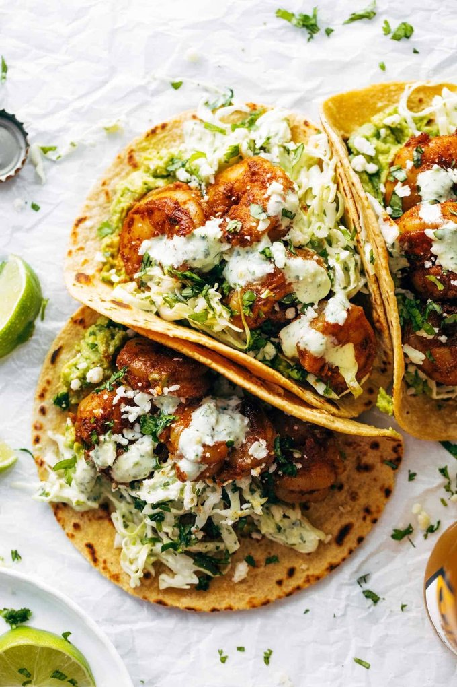

Shrimp Tacos Recipe
Home

Description: "These tacos are so fresh and delicious with just the right amount of heat to them. Great flavors and textures and super healthy too!"
Ingredients:
Garlic Cilantro Lime Sauce:
- 1/4 cup oil
- 11/4 cup water
- 11/2 cup chopped green onions
- 11/2 cup cilantro leaves
- 12 cloves garlic
- 11/2 teaspoon salt
- 1juice of 2 limes
- 11/2 cup sour cream or full-fat Greek yogurt
Shrimp Taco Spice Mix:
- 2 teaspoons each chili powder and cumin
- 1/2 teaspoon each onion powder and garlic powder
- 1/4 teaspoon cayenne pepper (more or less to taste)
- 1 teaspoon coarse sea salt
Stuff for the Shrimp Tacos:
- 1 lb. shrimp, peeled and deveined, tails removed
- 2-3 cups shredded green cabbage
- 8 small tortillas (corn or flour)
- Avocados, Cotija cheese, and lime wedges for serving
Instructions:
- Sauce: Pulse all the sauce ingredients in a food processor or blender until mostly smooth.
- Slaw: Toss some of the sauce (not all) with the cabbage. We’ll use the leftover sauce to top the tacos.
- Shrimp: Pat the shrimp dry with paper towels. Toss the shrimp in a small bowl with the spice mix to get it coated. Heat a drizzle of oil a large skillet over medium high heat. Add the shrimp to the hot pan and sauté for 5-8 minutes, flipping occasionally, until the shrimp are cooked through.
- Assembly: For the prettiest and easiest-to-eat assembly, go in this order: smashed avocado, slaw, and shrimp. Finish with Cotjia cheese, lime wedges, and extra sauce.